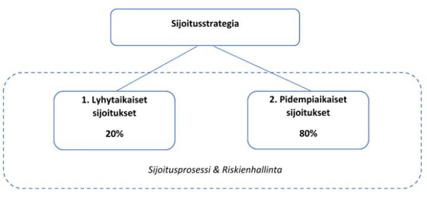
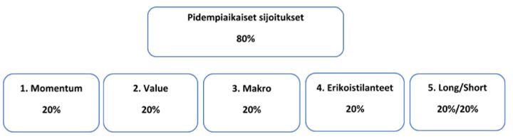
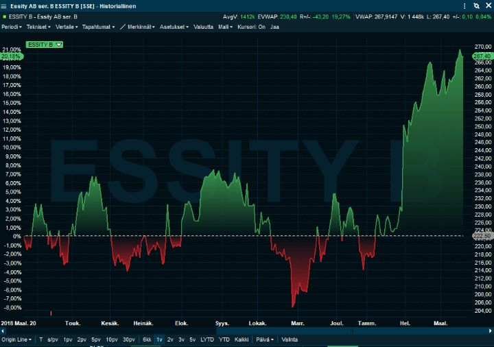
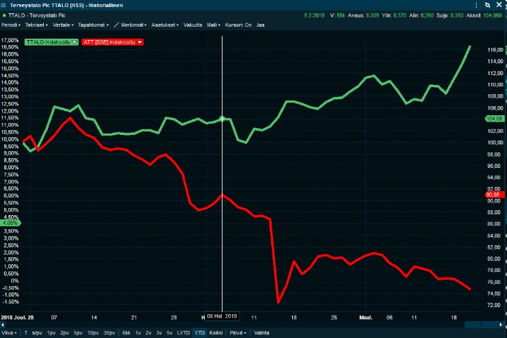

Miten me sijoitamme?
Monimutkaisuus on usein kiehtovaa. Usein lääkärien ja insinöörien sanotaan olevan huonoja sijoittajia, koska he luottavat itseensä liikaa ja tekevät sijoittamisesta monimutkaista. Monimutkaisuus saa ihmiset tekemään liikaa kauppaa ja ottamaan enemmän riskiä kuin he ymmärtävät.
Usein asiantuntijat käyttävät jargonia ja monimutkaistavat asioita vaikuttaakseen päteviltä. Ja ihmiset menevät halpaan. Asiaa vähemmän tuntevan ihmisen on vaikea uskoa, että sijoittamisessa yksinkertaisin tie on usein se paras.
Yksinkertaisuus on sijoittamisessa valttia, koska markkinatuottojen voittaminen on hyvin vaikeaa. Jos se ei onnistu sitä päivätöikseen yrittävältä, mikä todennäköisyys jää amatöörille?
Esimerkki yksinkertaisuudesta: Yksityissijoittajille indeksirahasto on usein parempi ratkaisu kuin salkun luominen itse. Ellei osakepoiminnasta nauti, on osakkeiden itse valikoimista lähes mahdoton perustella. Paljon tuottavampaa sama kulutettu aika olisi, jos sen käyttäisi rahan tienaamiseen, ei sijoitusten tuunaamiseen.
Meidän tavoitteemme on voittaa markkinat reilulla marginaalilla. Ja se on samalla meidän ongelmamme: Se ei jo määritelmän mukaisesti voi onnistua sijoittamalla vain indeksiin. Se ei ole yksinkertaista. Pyrimme kuitenkin tekemään näitä monimutkaisempia asioita mahdollisimman johdonmukaisesti.
Kuten viime viikolla menimme lupaamaan, seuraavassa olemme avanneet hieman sitä prosessia, jolla tavoitteeseen pyrimme.
Miten sijoitamme?
Olemme jakaneet strategiamme kahteen kategoriaan sijoitusten tavoitehorisontin perusteella:
· Lyhytaikaiset treidit (alle viikon pitoaika)
· Pidempiaikaiset sijoitukset
Kumpaakin strategiaa määrittelevät omat sääntönsä päätöksenteosta ja riskienhallinnasta. Toisaalta eri aikahorisontit ovat osa kokonaisuutta. Sen takia seuraamme tarkasti kokonaisriskiämme. Indeksituotteilla voimme muokata markkinariskin haluamallemme tasolle. Jos löydämme hyviä sijoitusmahdollisuuksia pörssistä, mutta markkinatilanne huolestuttaa, voimme vähentää markkinariskiä esimerkiksi myymällä indeksifutuuria.
Maantieteellisesti painotamme pohjoismaita kotikenttäedun ajatuksella, mutta sijoitamme toki joustavasti ympäri maailman.

Lyhytaikaiset treidit
Meillä on paljon omaa näyttöä siitä, että lyhyen tähtäimen kaupankäynnillä pystyy saamaan lisätuottoa pääomallemme. Lyhyellä tähtäimellä tärkein osa on uutisiin nopeasti ja oikein reagoinnilla. On myös erilaisia muiden käyttäytymiseen perustuvia markkinoiden epätehokkuuksia, joita pyrimme hyödyntämään. Tämä on ehdottomasti sitä osastoa, jota tuskin kannattaa kokeilla kotona, ellei tiedä mitä tekee. Koska osakkeiden pitoajat ovat minuuteista päiviin, ei lyhytaikainen kaupankäynti tarvitse kovin paljoa pääomaa.
Tässä kirjoituksessa tarkoituksemme on käydä tarkemmin läpi pitkäaikaisen sijoituksemme prosessia. Mainittakoon kuitenkin nopeasti, että lyhytaikaiset treidit voivat olla esimerkiksi uutisvirtaan, yhtiöiden kvartaalituloksiin, raaka-aineiden tai valuuttojen muutoksiin tai osakkeiden kysynnän ja tarjonnan epätasapainoihin reagoimista.
Pidempiaikaiset sijoitukset
Tällä hetkellä on vaikea löytää väärin hinnoiteltuja osakkeita. Likviditeettiä riittää. Voidaan ajatella, että markkinat ovat pysyvästi tehokkaammat. Toisaalta kyse voi olla myös runsaan likviditeetin aiheuttamasta väliaikaisesta tilasta. Todennäköisimmin markkinat ovat jatkossakin tehokkaammat kuin 30-40 vuotta sitten.
Historiallisesti tilanteet ovat kuitenkin vaihdelleet. Yleisesti voisi sanoa, että epävakaammassa ympäristössä ja alhaisemmilla arvostustasoilla mahdollisuuksia tuppaa olemaan enemmän. Esimerkkinä joulunajan pörssien laskussa oli jo merkkejä, että osakkeita myytiin ajoittain aika harkitsemattomasti.
Olemme jakaneet pidemmät sijoitukset tyypiltään viiteen eri kategoriaan:

Emme ole erikoistuneet vain yhteen näistä laatikoista. Pyrimme vähentämään salkun heiluntaa sijoittamalla ei strategioihin, joiden korrelaatio keskenään on vähäistä, joskus jopa negatiivista. Suomeksi sanottuna pyrimme maksimoimaan hajautuksen hyödyt. Makroa lukuun ottamatta laatikot koostuvat pääasiassa osakesijoituksista.
Momentum ja arvo toimivat erilaisissa osakemarkkinoiden vaiheissa. Makrosijoituksiin voimme valikoida kohteita, jotka voivat käyttäytyä osakemarkkinoihin nähden jopa käänteisesti. Erikoistilanteissa esim. fuusiot, yhtiöiden spin-offit, uudelleenjärjestelyt tai lääkkeen viranomaishyväksyntä ovat seikkoja, joissa markkinakehitys on usein toisarvoista. Samoin, kun myymme lyhyeksi yhtä yhtiötä ja ostamme toista, riski keskittyy omaan osaamiseen markkinariskin sijaan.
Vaikka arvosijoittaminen on ollut viimeiseltä sadalta vuodelta erittäin tuottoisa strategia, se on hävinnyt perinteisesti heikommalle kasvusijoittamiselle jo reilut kymmenen vuotta. Järkevilläkin strategioilla on pitkiä huonoja kausia. Miksi siis laittaa kaikki munat samaan koriin?
Käymme tässä läpi nämä viisi eri tapaa sijoittaa. Mukaan olemme pyrkineet lisäämään jonkin esimerkin strategiasta. Se ei todennäköisesti ole paras ideamme, vaan asiaa helposti kuvaava esimerkki.
1. Momentum
Momentum-sijoittaja kaivaa ideansa nousijat-listoilta. Momentumia on sekä absoluuttista että suhteellista. Yleisenä momentumin vahvuuden arviontijaksona pidetään 12kk, mutta usein käytetään myös kuuden kuukauden periodia.
Koska momentum-rahastojen suosio on kasvanut, olemme taipuvaisia katsomaan vähän lyhyempiä periodeja kuin suurin osa rahastoista. Koska momentum-sijoittaminen perustuu jossain määrin oletukseen, että sijoittajat ovat valmiita maksamaan liikaa hyvin pärjäävistä yhtiöistä, emme halua olla viimeisten joukossa ostamassa huippukursseihin.
Pyrimme analysoimaan omista momentum-screenereistämme osakkeita, joista pidämme. Emme halua sijoittaa meidän mielestämme villityksiin tai suhteettoman kalliisiin yhtiöihin. Tämän takia missaamme joskus hyviä nousuja, mutta toisaalta riski on hallitumpi, kun näemme ettei yhtiön arvo ole aivan tuulesta temmattu.
Usein momentum-osakkeet näyttävät kalliilta. Samalla on hyvä todeta, että alle vuoden aikahorisontilla arvostustasojen merkitys kurssien käyttäytymiseen on suhteellisen pieni. Tärkeä osa strategiaa on kuitenkin luopua osakkeista, kun ne menettävät vahvan kehityksensä suhteessa muihin osakkeisiin.
Esimerkki: Essity
Ruotsalainen hygienia- ja terveystuotteiden valmistaja Essity on kirjoitushetkellä kaikkien aikojen huipussaan. Yhtiö on tuottanut vuodessa 23 % ja kuudessa kuukaudessa 14 %. Osake heräsi kunnolla henkiin Q4-tuloksen yhteydessä. Omistimme osaketta ennen tulosta, mutta lähdimme isommin siihen mukaan tulospäivänä. Essity hyötyisi sellun hinnan laskusta. Toisaalta Libero, Lotus ja Tena ovat suhteellisen taantuman kestäviä brändejä. Yhtiön P/E on 19 ja EV/EBITDA 12, joten arvosalkkuun sillä ei olisi asiaa. Huomionarvoista kuitenkin on, että Essity on pystynyt parantamaan kannattavuuttaan samaan aikaan, kun kustannukset ovat nousseet. Yhtiö kasvaa nopeammin kuin kannattavampi kilpailijansa Kimberly-Clark. Essityllä on kuitenkin sisäisin keinoin mahdollisuus parantaa myös omaa kannattavuuttaan. Jos ei usko sellun hinnan laskuun, voi kaveriksi ottaa vaikka Stora Enson, jolle sellun hinnan lasku on hinnoiteltu kurssiin.

2. Arvo
Arvosijoittaja sijoittaa halpoihin yhtiöihin. Historiallisesti suosituin ja tutkituin tapa on ollut sijoittaa yhtiöihin, joiden hinta on alhainen kirja-arvoon nähden. Tällä strategialla on saavutettu historiallisesti indeksejä merkittävästi parempia tuottoja. Emme usko, että perinteinen P/B-luku on nykyaikana paras mahdollinen tapa sijoittaa arvoon.
Emme pyri valitsemaan vain halvoista halvimpia osakkeita. Niissä on usein jotain kroonisesti vikaa. Tärkeintä on, että meidän näkemyksemme yrityksen arvosta on markkinoiden näkemystä korkeampi. Joskus se voi tarkoittaa alle kirja-arvon noteerattavaan osakkeeseen sijoittamista, yleensä kuitenkin ei.
Pyrimme luomaan lisäarvoa tunnistamalla yhtiöstä, onko kyse arvoansasta vai ohimeneviä vaikeuksia kokevasta yhtiöstä. Tässä oleellisena osana on sekä yleisten taloussyklien, mutta myös alakohtaisen syklisyyden ymmärtäminen.
Monien rakastama osinkosijoittaminen luetaan muuten myös arvosijoittamisen piiriin. Luultavasti juuri sen suosion takia osinkosijoittaminen ei pärjää monille muille arvostrategioille historiallisessa tarkastelussa.
Esimerkki: Nordea
Nordean osake on vain hieman yli kirja-arvon. Yhtiön P/E-luku on vain hieman yli kympin ja osinkoprosentti selkeästi yli kahdeksan. Pidämme Nordeaa arvoyhtiönä, jonka arvon vaupautuminen ei kuitenkaan ole järin yksinkertaista. Yhtiöllä on omat tiedostetut ongelmansa. Emme niinkään pidä viime vuosina uutisotsikoissa pyörineitä asioita kovin suurena ongelmana. Suurempi ongelma on yhtiön kustannusten mukana laskevat tuotot.
Olemme ostaneet Nordeaa laskuihin ja myymme nousuihin. Osinko, aktivistisijoittaja Cevianin mukaan tulo ja johdon osakeostot ovat nostattaneet kurssia - ja luultavasti vielä vähän on sitruunassa puristettavaa. Pitkällä tähtäimellä aavistuksen kalliimpi kilpakumppani SEB voi olla laadullisesti parempi vaihtoehto.
3. Makro
Markosijoittamisessa pyritään ottamaan näkemystä maailmanlaajuisesti muutoksiin eri omaisuuslajeissa. Se voi esimerkiksi tarkoittaa tiettyyn maanosaan osakesijoitusten tekemistä tai tiettyjen korkopapereiden hankkimista. Yksi paljon näkyvyyttä historiassa saanut muoto on valuuttojen liikkeiden ennakointi. George Sorosin Englannin keskuspankin murtaminen on tunnettu esimerkki tästä.
Asiansa osaavan sijoittajan on joskus mahdollista ennustaa melko hyvin, että jokin asia tapahtuu maailmantaloudessa ennen pitkää. Sen sijaan muutosten ajankohdan määrittäminen tarkasti on lähes mahdotonta. Koska sijoittamisessa ajoissa oleminen on käytännössä yhtä kuin väärässä oleminen, on makrosijoittaminen hyvin hankalaa.
Meidän näkemyksemme on, ettei näillä markkinoilla voi jatkuvasti tietää asioita muita paremmin. Sen sijaan on mahdollista saada silloin tällöin etua joko olemalla vastarannan kiiski tai lähtemällä suuriin muutoksiin trendin mukaan. Helppoa se ei tietenkään ole. Maailman asioiden laaja seuraaminen voi lisäksi antaa hyviä ideoita myös yksittäisten osakkeiden ostoon.
Esimerkki:
EUR/SEK: Omistamme Ruotsin kruunua huomattavasti enemmän kuin meillä on siellä omistuksia. Uskomme, että SEK on aliarvostettu eikä keskuspankki halua sen enää halventuvan. Ruotsin ongelmat, etenkin asuntomarkkinat, ovat hyvin tiedossa. Aiemmin kruunu vahvistui euroon nähden eurokriisissä, mikä olisi hyvä ominaisuus seuraavassa eurokriisissä.
4. Erikoistilanteet
Erikoistilanteisiin luemme kaikki poikkeukselliset potentiaalisesti yhtiön arvoon vaikuttavat seikat, kuten esimerkiksi:
· Fuusiot ja yritysostot
· Spinoffit, eli kun yhtiöstä erotetaan osa uudeksi pörssiyhtiöksi
· Saneeraukset ja käänneyhtiöt
· Aktivismi
· Oikeusjutut ja mainekatastrofit
· Suuret pääoman allokointipäätökset: Velkojen uudelleenjärjestely, lisäosingot, omien osakkeiden osto
Pyrimme katsomaan tätä laajaa ja erittäin mielenkiintoista kenttää avoimin mielin. Koska seuraamme uutisia maailmalta tarkasti, pysymme hyvin kartalla erikoistilanteista. Lyhyen aikavälin tilaisuuksien lisäksi niistä voi löytää pitkiin salkkuihinkin.
Usein yhtiöt pysyvät kroonisesti halvan näköisinä, koska niitä ei johdeta omistajaystävällisesti. Yhtiö esimerkiksi pitää tileillään käteistä tyhjän panttina vuodesta toiseen. Erikoistilanteet voivat korjata tällaisia tilanteita. Yhtiön johto voi itse yllättää sijoittajat positiivisesti tai aktivistisijoittaja voi hieman painostaa johtoa. Monialayhtiöiden hajottamisesta on esimerkiksi historiallisesti saanut erinomaisia tuottoja ostamalla eriytettävää yhtiötä. Markkinat tuntuvat tässäkin suhteessa tehostuneen, ja ylimääräiset tuotot tuntuvat olevan pienenemään päin. Näissäkin on siis tarvetta hyvälle analyysille.
Erikoistilanteet voivat myös laskea kurssia reilusti. Tämä on näkynyt viime aikoina pohjoismaisten pankkien rahanpesukriiseissä. Boeingin kurssi on laskenut lentokoneturmien ja Volkswagenin kurssi päästöhuijausten takia. Nämä joskus tarjoavat hyviä ostopaikkoja, mutta ensimmäisten joukossa ostaminen on usein osoittautunut huonosti tuottavaksi taktiikaksi.
Esimerkkejä (missä olemme olleet tai olemme vielä jotenkin mukana):
· Onnistunut yritysosto Amerissa ja epäonnistunut Baswaressa
· Cevianin aktivismi Nordeassa
· Viimeaikaiset spinnoffit Autoliv/Veoneer ja Atlas Copco/Epiroc
· Tulevat spinoffit Cramossa ja Electroluxissa
· Rahanpesuepäilyt Danskessa, Swedbankissa ja Nordeassa.
5. Long/short salkku
Tässä strategiassa pyrimme tasapainottamaan osakeomistuksia vastaavan suuruisilla lyhyeksi myynneillä. Olemme aika joustavia kohteiden suhteen. Yritykset voivat olla samalta alalta tai sitten eri aloilta. Joskus teemme pareja jopa saman osakkeen eri sarjoista. Joskus haluamme suojata osakkeen markkinabetan myymällä (tai ostamalla jos osakeshortti) esim. sektorifutuuria osaketta vastaan.
Emme ole vielä erityisen kiinnostuneita, jos yksi osake on hieman toista osaketta kalliimpi. Yleisesti ottaen korkea valuaatio ei ole erityisen hyvä peruste shortata osaketta. Yleensä olisi hyvä, että olisi joku katalysti, jonka katsomme muuttavan tilanteen. Etenkin, kun lyhyeksimyymisestä tulee kustannuksia.
Osakeparien luomisessa on sekin hyvä puoli, ettei se lisää koko salkun markkinariskiä.
Esimerkki:
Long Terveystalo, Short Attendo
Omistimme jo vuoden alusta Terveystaloa. Attendoa myimme lyhyeksi helmikuun alussa, kun vanhainkotien ongelmat tuntuivat paisuvan. Emme niinkään odota suuria sakkoja Attendolle. Osa sijoittajista ei kuitenkaan halua sijoittaa yhtiöön, jonka eettisyys kyseenalaistetaan. Yhtiölle myös kertyy kuluja, kun tilannetta parannetaan ja ongelmat voivat vaikuttaa uusien sopimusten saamista. Helmikuun puolessa välissä Attendolta tuli huono tulos ja Terveystalolta hyvä tulos. Koska ero on kasvanut yli 30 % reilussa kuukaudessa, olemme aloittaneet position sulkemisen. Alla alkuvuoden kuvaaja, jossa Terveystalo on vihreä kuvaaja, Attendo on punainen ja kursiivi kuvaa meidän Attendon myyntihetkeä.

Sijoitusfilosofiamme
Faktorisijoittaminen kvantitatiivisesti vs. meidän tapamme
Momentum ja arvo ovat faktoreita, joiden toimivuudesta on historiallisesti pitkän aikavälin näyttöä. Molemmat perustuvat ihmisen käyttäytymispsykologian vinoumiin. Ahneus ja pelko ovat ihmisen ominaisuuksina vakioita. Ihmisluonne ei muutu ja ihmisen on vaikea pysyä sijoitusstrategioissa. Siksi nämä faktorit ovat toimineet yli ajan.
Ne kuitenkin ovat jossain määrin toistensa, jos eivät vastakohtia, niin ainakin ammentavat ylituoton mahdollisuuden näistä ihmisluonteen eri äärilaidoista. Kumpikaan ei toimi aina ja esimerkiksi arvo faktorina ei ole “toiminut” viimeisten kymmenen vuoden aikana. Siksi pyrimme hajauttamaan riskin hyödyntämällä molempia strategioita.
Niistä toinen sopii meistä toiselle ja toinen toiselle omissa luonteenpiirteissämme. Ville ostaa mieluummin nousevia osakkeita. Mikko taasen osaa tarttua putoavaa puukkoa tupesta.
Faktorisijoittaminen on yleistynyt viime vuosina ja yleisin tapa on tehdä sitä puhtaan kvantitatiivisesti. Eli valitaan joku mittari, jonka perusteella ostetaan tai myydään yhtiöitä. Faktorin peruste on usein, että se on historiallisesti tuottanut parempaa riskikorjattua tuottoa kuin indeksi JA sillä on looginen peruste.
Me pyrimme katsomaan asiaa toisinpäin. Pyrimme järjestelmällisesti käyttämään historiallisesti tuottoisia strategioita, mutta tekemään lopulliset päätökset laadullisesti. Parhaat sijoitukset tehdään usein, kun useampi hyvä ominaisuus yhdistyy samassa osakkeessa. Sanotaan, että edullinen osake, joka on jo siirtynyt nousutrendiin, on houkuttelevampi sijoituskohde kuin vain halpa osake.
Myös alhaisen volatiliteetin ja laadun ominaisuudet osakkeissa ovat tuottaneet riskikorjatusti historiallisesti erinomaisesti. Ne ovat hyviä ominaisuuksia pitää takaraivossa. On kuitenkin hyvä mahdollisuus, että nollakorkojen ympäristö on ajanut perinteisiä velkakirjasijoittajia näihin osakkeisiin, heikentäen tulevia tuotto-odotuksia. Tästä onkin viitteitä.
Erikoistuminen vs. generalismi
Usein kuulee kysyttävän, miksemme keskittyisi johonkin pieneen segmenttiin? Valita omaksi tuntuvat pienempi niche ja kehittyä siinä parhaaksi. Luontainen esimerkki olisi pohjoismaiset pienyhtiöt. Ei strategiassa mitään vikaa olisi.
Miksi kuitenkin valitsemme generalismin? Vastaus: ydinosaamisemme on päätöksenteossa eikä mahdollisimman suuressa tietomäärässä jostain asiasta.
Tietoa nykyään on saatavilla enemmän kuin kerkeämme läpi käymään. Kun tarpeeksi syvälle kaivaa, päätyy löytämään myös riittävästi omaa teesiään vastaan olevia argumentteja. Jos eri argumenttien merkitystä ei osaa painottaa oikein, voi kauppa jäädä tekemättä. Toisaalta joskus tiedon määrä lisää vain omaa käsitystään siitä, että voisimme määrittelemään lopputuloksen (“illusion of control”).
Kuten yksi maailman arvostetuimmista arvosijoittajista Seth Klarman on sanonut: ”…information generally follows the well-known 80/20 rule: the first 80% of the available information is gathered in the first 20% of the time spent.”
Myös George Soros kirjoittaa kirjassaan: “I used to claim, only half jokingly, that it took me 48 hours to become expert on any subject; if I spent any more time on it my judgement would be clouded by the facts.”
Tietyt kaavat toistuvat markkinoilla ja kehitämme osaamista niiden hyödyntämiseen. Pyrimme olemaan siellä, missä on kulloinkin mahdollisuuksia ja epätehokkuuksia.
Päätöksenteon prosessi sekä sen arviointi ja kehittäminen
Yksi tärkeimmistä tavoitteistamme on eliminoida puutteellista ajattelua päätöksenteostamme. Se ei tietenkään ole helppoa. Yritämme kuitenkin kehittyä siinä joka päivä. Jokaisen päätöksen kohdalla tulee miettiä, mitä nyt mahdollisesti ajattelee väärin. Paranoidi optimismi on hyvä käsite muistaa. Vaikka suhtautuu asioihin epäilevästi, pitää kuitenkin olla uskoa, että asiat lopulta järjestyvät hyvin.
Virheistään voi ja pitääkin oppia. Ensin pitää kuitenkin pystyä myöntämään itselleen, että on erehtyväinen. Etenkin alalla, jolla pyritään olemaan vakuuttavia ja ammattitaitoisia, voi tämän asian myöntäminen olla yksilölle haastavaa. Markkinoiden satunnaisuuden vuoksi perusteltu päätöksentekoprosessi voidaan tuomita virheenä. Samoin suotuisa lopputulos voi näyttää osaamiselta, vaikka tosiasiallisesti on voinut olla kyseessä tuuri. Siksi päätöksenteko tulee dokumentoida, on seurattava kehitystä ja analysoitava prosessia yli ajan.
Sekä lyhyissä että pidempiaikaisissa sijoituksissa päätöksenteko määräytyy ylläkuvattujen kriteerien perusteella. Pyrimme siihen, että position avaushetkellä tiedämme, millaisin ehdoin irtaannumme siitä. Näin siitä syystä, että pyrimme vähentämään tulevaisuudessa tarvittavien päätöksien määrää. Mitä enemmän päätöksiä, sitä enemmän inhimillisillä ajattelun vinoumilla on mahdollisuuksia vaikuttaa niihin.
Sama pätee myös salkun kokonaisriskin määrittelyyn. Tiedämme nyt, millaisin ehdoin riskipainot tulevaisuudessa muodostuvat.
Prosessin arvioinnin ja kehittämisen keskiössä on sijoituspäiväkirjan ylläpitäminen. Kirjaamme kaikki yli päivän mittaiset kaupat ylös. Tämän tarkoituksena on sekä auttaa arvioimaan että kehittämään päätöksentekoa.
Prosessi myös auttaa sijoitussuunnitelmassa pitäytymisessä. Siinä on määritelty hinta- ja aikatasot, joissa treidistä poistutaan. Samoin ehdot, joilla sijoituksen tuottotavoite täyttyy. “Plan the trade, trade the plan” ja “Honor your stops” ovat perusperiaatteitamme.
Myös sijoituksen teesi kirjataan ylös. Tämä mahdollistaa taidon erottelussa tuurista tuottojen ja tappioiden arvioinnissa. Voi olla, että sijoitus osoittautuu voitolliseksi, mutta teesimme ei toteudu. Tämä on prosessin kannalta yhtä kuin olisimme olleet väärässä.
Kun tavoite tai stop loss -taso on saavutettu ja positio on suljettu, palaamme myöhemmin myös arvioimaan, miten sijoitus olisi pärjännyt, jos sitä ei olisi suljettu tuolloin, niillä etukäteen määritellyin ehdoin. Tämä auttaa exit-strategioiden arvioinnissa ja kehittämisessä.
Salkun kokonaisriskin hallinta
Jatkuva tai ainakaan tarkka markkinoiden ajoittamisen on tuomittu epäonnistumaan. Suurimman osan ajasta naapurin kissan arvio on aivan yhtä hyvä kuin omamme. On kuitenkin hyvä määrittää, onko nyt aika olla rohkea vai varovainen. Tärkein riskin lähde meille on olla väärällä puolella osakemarkkinoiden liikkeitä.
Mitkä asiat vaikuttavat näkymäämme? Tässä tärkeimpiä:
- Osakkeiden arvostustasot: Osakekurssien suhde arvostuksiin ei ole yksioikoinen. Itseasiassa arvostuksen vaikutus seuraavan vuoden odotettuun tuottoon voidaan kyseenalaistaa. Sitä pitemmällä aikavälillä arvostuksilla alkaa kuitenkin olla väliä. Mitä pitemmälle katsotaan, sitä parempi tilanne edulliset osakkeet ovat.
- Osakeindeksien trendit: Trendit ovat historiallisesti toimineet etenkin riskienhallintakeinona. Yksinkertaisilla liukuvilla keskiarvoilla on voinut jonkin verran parantaa myös riskikorjattua tuottoa. Ahneus ja pelko ovat pysyviä ihmisluonteen ominaisuuksia, joten trendejä ei kannata jättää huomiotta myöskään tulevaisuudessa.
- Sentimentti: Osakepainot, kyselytutkimukset ja yleinen ilmapiiri antavat viitteitä siitä, miten muut sijoittajat ovat asemoituneet markkinaan. On parempi sijoittaa, kun muut ovat pessimistisiä. Kun kaikki muut taas ovat euforian pauloissa, on hyvä olla varovainen.
- Taloussykli: Minkälaisessa taloussuhdanteessa tärkeimmät taloudet ovat? Saako lainaa helposti? Rakennetaanko asuntoja historiallisesti paljon vai vähän? Mitä pitemmälle suhdanne on edennyt, sitä riskialttiimmaksi osakemarkkinat käyvät. Kiinan ja Yhdysvaltojen suhdanne on pitkälle edennyt, Euroopassa taas asia vaihtelee maakohtaisesti.
On tietenkin eri näkemyksiä, missä vaiheessa näissä tekijöissä nyt olemme. Meidän mielestämme osakkeiden arvostustasot ovat koholla, osakeindeksien trendi on vielä kysymysmerkki, sentimentti on yllättävän tasapainossa ja taloussykli vaikuttaisi olevan loppuvaiheessa. Olemme siis lähempänä varovaisuutta suosivaa ympäristöä kuin rohkeutta.
Lopuksi
Edellä käsitellyt asiat eivät ole kiveen lyötyjä totuuksia. Sijoitusprosessit muovautuvat jatkuvasti, ja kyky kääntää takkia on erinomainen ominaisuus sijoittamisessa. Kuitenkin kaikkien kannattaisi tehdä kirjallinen sijoitussuunnitelma. Tämä on kuvaelma meidän sijoitussuunnitelmastame — syteen tai saveen.
Teksti alkoi yksinkertaisuudesta ja monimutkaisuudesta. Tiedostamme, ettei tämä sijoitustapamme ole yksinkertaisimmasta päästä. Mutta se on hyvä ja meille sopiva suunnitelma.
Tämän pitkän sepustuksen myötä blogimme jää parin viikon hiihtolomatauolle. Kenties huomenna vielä viikon kuumat linkit, mutta sitten… adios muchasos!
Kevätterveisin,
Mikko & Ville
Disclaimer:
Kolumnit sisältävät mielipiteitä ja mahdollisesti tietoa omista sijoituksistamme, jotka voivat vaihdella päivästä toiseen. Mitään, mitä kirjoitamme ei tule ottaa sijoitussuosituksena. Kuten teksteissämme painotamme, päätökset kannattaa aina tehdä itse. Lukija vastaa itse voitoistaan ja tappioistaan.